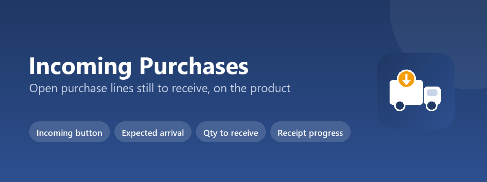

See every purchase order line still waiting to be received, directly on the product.
Open a product and an Incoming button shows how many purchase order lines are still expected. The Incoming Purchases tab lists them with the order, the vendor, the expected arrival and the ordered, received and remaining quantities, earliest arrival first. Nobody has to dig through purchase orders to answer a simple stock question.
🚚 Incoming buttonA button on the product shows how many purchase lines are still to be received and opens the full list. |
📋 Incoming Purchases tabOrder, vendor, expected arrival and the ordered, received and remaining quantity for every open line. |
📊 Receipt progressEach line is marked Nothing Received or Partly Received, so partial deliveries stand out. |
📦 Goods and kitsWorks for all goods, stocked or not, and a product bought as a kit is listed while its components are still expected. |
🔗 Open the orderPurchase users jump from a line to its purchase order in one click. |
👥 Purchase and InventoryShown to Purchase users and Inventory users, on products and on each of their variants. |
Odoo 18.0 • Community & Enterprise • depends on Purchase and Inventory • Licence LGPL-3
Odoo implementation and development. thecodelegion.com